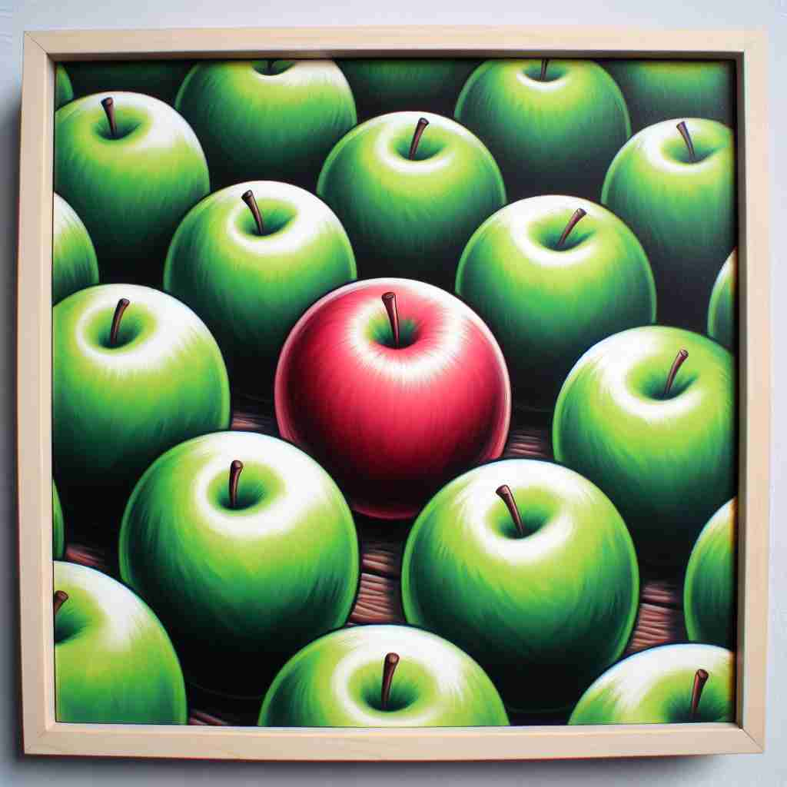

💬 The red apple is among the green apples in the bowl.
💬 She feels happy to be among friends at school.

💬 The key is among the coins in the box.

💬 The red apple is among the apples.
🔈 [ə'mʌŋ]
🗝️ prep. surrounded by or in the company of other people or things
🖼️ 在一个繁忙的咖啡馆里，一位作家坐在角落，四周围绕着喝咖啡和交谈的人群。作家被置于各种声音和气味之中，这展示了 'among' 的含义：被其他人或物体包围。
🔍 想象一个人或物被其他人或物包围的场景。这种"被包围"或"在其中"的核心概念贯穿了'among'的各种用法。无论是物理上的包围，还是抽象的关联、身份认同、互动关系或共同行为，都可以用这个核心图像来联想。这有助于你更容易理解和记忆'among'的多重含义。
💬 The red apple is among the green apples in the bowl.
💬 She feels happy to be among friends at school.
💬 The key is among the coins in the box.
💬 The red apple is among the apples.
🌳 该词由古英语词根 'amang' 演变而来，其中 'a-' 表示 '在…中'，'mong' 與 'mang' 有关系，表示 '混合'. 因此，'among' 意味着在某物或某人之间或其中。
💡 记忆 'among' 时，可以联想到 'a mingling'，表示在一堆东西或人之间混合在一起，帮助理解它的语境应用。
🗝️ prep. in the midst of or in association with
🖼️ 在一个团队建设活动中，各个团队成员聚集在花园里，正在进行信任游戏。他们站成圆圈，每个人都在帮助彼此，体现了 'among' 带有与他人一起的意思。
💬 There's a thief among us.
❓ 扩展了"被包围"的概念到更抽象的关联中
🗝️ prep. being a member of a particular group
🖼️ 在一个学校合唱团的排练中，新加入的学生站在其他团员中间，尝试跟上大家的步伐。这显示了 'among' 作为某一特定群体的一员的含义。
💬 She is ranked among the best athletes in the world.
❓ 强调个体作为群体一部分的身份
🗝️ prep. occurring between members of a group
🖼️ 在一场圆桌会议上，公司的高管们正在热烈讨论计划的发展方向。每个人都对着其他人提出观点，展现了 'among' 作为群体成员之间互动的意思。
💬 They divided the cake among themselves.
❓ 描述群体内部的互动或关系
🗝️ prep. by combined or joint action of
🖼️ 几个邻居决定一起清理小区公园，大家分工合作，将公园打扫得焕然一新。这描绘了 'among' 的含义：通过联合或共同的行动。
💬 Among them, they raised over $10,000 for charity.
❓ 强调群体成员的共同行为